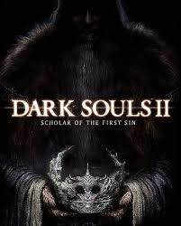
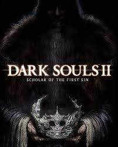

Видеоигра в жанре action/RPG с открытым миром, разработанная японской компанией From Software для платформ PlayStation 3, Xbox 360 и Windows.
В Японии издателем игры выступала сама From Software; на международном рынке игру издавала компания Namco Bandai Games. Dark Souls, изначально известная под рабочим названием Project Dark, является идейным наследником игры Demon's Souls и второй частью в серии Souls.
Версия игры для игровых консолей была выпущена в сентябре 2011 года, расширенная и дополненная версия для Windows с подзаголовком Prepare to Die Edition — в августе 2012 года. Дополнительный контент из ПК-версии игры был позже выпущен на консолях в виде загружаемого дополнения под названием Artorias of the Abyss. 25 Мая 2018 года для PC,PS4,Xbox One вышла Dark Souls: Remastered.